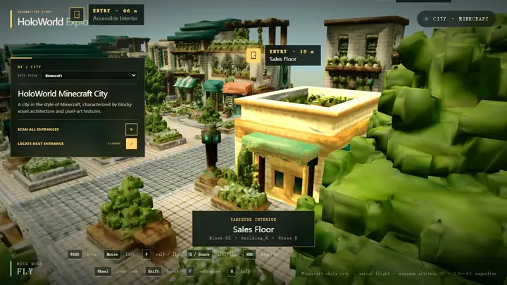

01 / GENERATIVE 3D WORLD
HoloWorld

Free exploration · aerial fly-through · linked interiorsUnified indoor–outdoor urban world generation
A continuously evolving cross-scale world context connects cities, blocks, buildings, and interiors into one coherent 3D urban world.